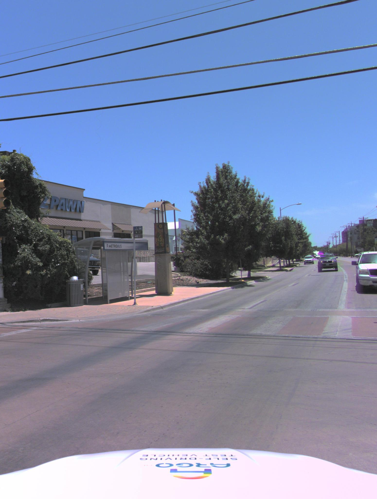

TB-Bench: Training and Testing Multi-Modal AI for Understanding Spatio-Temporal Traffic Behaviors from Dashcam Images/Videos
Korawat Charoenpitaks1,*,
Van-Quang Nguyen2,*,
Masanori Suganuma1,
Kentaro Arai3,
Seiji Totsuka3,
Hiroshi Ino3,
Takayuki Okatani1,2,*
1Tohoku University,
2RIKEN AIP,
3DENSO CORPORATION
*Corresponding authors: korawat@vision.is.tohoku.ac.jp, quang.nguyen.jz@riken.jp, okatani@tohoku.ac.jp
The application of Multi-modal Large Language Models (MLLMs) in Autonomous Driving (AD) faces significant challenges due to their limited training on traffic-specific data and the absence of dedicated benchmarks for spatiotemporal understanding. This study addresses these issues by proposing TB-Bench, a comprehensive benchmark designed to evaluate MLLMs on understanding traffic behaviors across eight perception tasks from ego-centric views. We also introduce vision-language instruction tuning datasets, TB-100k and TB-250k, along with simple yet effective baselines for the tasks. Through extensive experiments, we show that existing MLLMs underperform in these tasks, with even a powerful model like GPT-4o achieving less than 35% accuracy on average. In contrast, when fine-tuned with TB-100k or TB-250k, our baseline models achieve average accuracy up to 85%, significantly enhancing performance on the tasks. Additionally, we demonstrate performance transfer to another driving benchmark by co-training a model on the other driving benchmark dataset with our proposed dataset.
Overview
TB-Bench provides a comprehensive framework for understanding traffic behaviors using dashcam footage.
Our benchmark enables the development and evaluation of multi-modal AI models that can analyze
spatial and temporal aspects of traffic scenes, contributing to safer autonomous driving systems.
Key Contributions
- Introduction of TB-Bench, a benchmark for assessing MLLMs on eight perception tasks of traffic behavior understanding
- Presentation of vision-language instruction tuning datasets (TB-100k and TB-250k) for the tasks, along with a generic baseline
- Extensive experiments demonstrating the performance gap between existing MLLMs and fine-tuned baselines
- Demonstration that our proposed dataset can be used as part of co-training datasets to generalize and improve performance on other driving benchmarks
Benchmark Tasks
| Task Type |
Abstract Concepts |
Classes |
| Spatial Information: |
| Relative Distance |
distance in meters |
ℝ (numerical) |
| Spatial Reasoning |
back, back left, back right, front, front left, front right |
6 |
| Orientation Reasoning |
opposite, perpendicular, similar, and degrees |
3/ℝ |
| Object Behavior: |
| Other Lane to Ego-Vehicle |
front lane, front left lane, front right lane, oncoming traffic lane |
4 |
| Other Lane Changing |
left lane change, no change, right lane change |
3 |
| Other Turning |
go straight, left turn, right turn |
3 |
| Ego Behavior: |
| Ego Turning |
go straight, left turn, right turn |
3 |
| Ego Traverse Distance |
distance traveled in meters |
ℝ (numerical) |
Detailed Task Examples
The TB-Bench dataset consists of 8 tasks, each with 250 samples. Below are examples of each task:
1. Relative Distance
Format: Single-frame input
Description: Measures the ability to estimate the distance between the ego vehicle and another entity in meters.
Question: "What is the distance from the ego-vehicle to Entity #1 along the road's surface in meters?"
Answer: "10.57 meters"
2. Spatial Reasoning
Format: Single-frame input
Description: Tests the ability to determine the relative spatial position of other vehicles.
Question: "How are Entity #1 and Entity #2 spatially related, from the Entity #2 perspective?"
Answer: "back"
3. Orientation Reasoning
Format: Single-frame input
Description: Evaluates the ability to determine the orientation relationship between vehicles.

Question: "What is the angle between Entity #2 and Entity #1, in degrees?"
Answer: "179.91 degrees"
4. Other Lane to Ego-Vehicle
Format: Multi-frame input (8 frames)
Description: Tests the ability to identify which lane another vehicle is in relative to the ego vehicle.
Question: "How would you describe the lane position of Entity #1? Options: front lane, front left lane, front right lane, or oncoming traffic lane."
Answer: "front left lane"
5. Other Lane Changing
Format: Multi-frame input (8 frames)
Description: Evaluates the ability to recognize if another vehicle is changing lanes.
Question: "How would you describe the driving scene involving Entity #1? Please explain, focusing on the vehicle's lane change maneuver."
Answer: "left lane change"
6. Other Turning
Format: Multi-frame input (8 frames)
Description: Tests the ability to determine if another vehicle is turning.
Question: "How would you describe the driving scene involving Entity #1? Please explain, focusing on the vehicle's turning maneuver."
Answer: "turning right"
7. Ego Turning
Format: Multi-frame input (8 frames)
Description: Evaluates the ability to determine the turning direction of the ego vehicle.

Question: "How would you describe the driving scene involving our car? Please explain, focusing on our car's turning maneuver."
Answer: "left turn"
8. Ego Traverse Distance
Format: Multi-frame input (8 frames)
Description: Tests the ability to estimate the distance traveled by the ego vehicle in meters.
Question: "How far has our car driven and what kind of steering maneuver did it perform in the current scene?"
Answer: "12.48 meters"
Examples

Examples of tasks from TB-Bench. Each task consists of input image(s) accompanied by a question and a ground-truth answer.
Key Findings
- Zero-shot performance of existing MLLMs (including GPT-4o and Gemini) averages below 35% accuracy across the benchmark tasks
- Fine-tuning on our TB-100k dataset improves performance to 77.5% average accuracy
- Fine-tuning on TB-250k further improves performance to 85.1% average accuracy
- Performance transfers to other driving benchmarks when used in co-training
Resources
| Type |
Link |
Description |
| Paper |
arXiv Link |
Research paper describing the TB-Bench framework |
| Benchmark Dataset |
Hugging Face |
Dataset for benchmarking models |
| Training Dataset (TB-100k) |
Hugging Face |
100k balanced samples for vision-language instruction tuning |
| Training Dataset (TB-250k) |
Hugging Face |
250k samples for vision-language instruction tuning |
| Code |
GitHub Repository |
Implementation code and examples |
Contact